Synthèse des lois de commande Observateur/Controleur du Pendule Rotatif
Contents
- Les objectifs
- Fichiers fournis et travail à réaliser
- Modèle du Pendule Rotatif
- Specifications
- Synthèse des lois de commande Observateur/Controlleur: Cas continu sans rejet de perturbations constantes
- Synthèse des lois de commande Observateur/Controlleur: Cas discret sans rejet de perturbations constantes
- Synthèse des lois de commande Observateur/Controlleur: Cas continu avec rejet de perturbations constantes
- Synthèse des lois de commande Observateur/Controlleur: Cas discret avec rejet de perturbations constantes
Les objectifs
- Modélisation du pendule et l'obtention du modèle d'état linéaire
- Stabilisation du pendule dans la position verticale haute (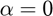) suivant les specifications données dans le sujet
- Asservissement de la position du bras motorisé du pendule (angle 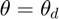) et rejet des perturbation constantes dues aux frottements secs ou aux perturbations de cette angle.
- Implementation des lois de commande sur dSPACE et test sur maquette
Fichiers fournis et travail à réaliser
- Modele_Pendule.m: Modèle d'état du pendule en boucle ouverte obetnu via les paramètres fournis par le constructeur (voir les fichiers fournis si nécessaire)
- Observateur_Controleur_Dspace.slx: Modèle de l'observateur-controleur discret sous dSPACE à adapter en fonction de la lois de commande qu'il implemente.
- Construire le modèle d'état du pendule en boucle ouverte et l'analyser (stabilité, controlabilité et observabilité)
- Synthetiser un observateur-controleur continu capable de stabiliser le pendule dans la position verticale haute conforme aux spécifications données. Réaliser le schema de commande sous Simulink en lui donnant le nom Pendule_Observateur_Controleur_Continu.slx et effectuer les tests nécessaires.
- Synthetiser un observateur-controleur en discret capable de stabiliser le pendule dans la position verticale haute conforme aux spécifications données. Réaliser le schema de commande sous Simulink en lui donnant le nom Pendule_Observateur_Controleur_Discret.slx et effectuer les tests nécessaires.
- Synthetiser un observateur-controleur continu capable de stabiliser le pendule dans la position verticale haute conforme aux spécifications données et capable de rejeter les perturbations constantes en entrée (frottements secs par exemple) et les perturbations constantes sur la sortie theta. Realiser le schema de commande sous Simulink en lui donnant le nom Pendule_Observateur_Controleur_Biais_Continu.slx et effectuer les tests nécessaires.
- Synthetiser un observateur-controleur discret capable de stabiliser le pendule dans la position verticale haute conforme aux spécifications données et capable de rejeter les perturbations constantes en entrée (frottements secs par exemple) et les perturbations constantes sur la sortie theta. Réaliser le schema de commande sous Simulink en lui donnant le nom Pendule_Observateur_Controleur_Biais_Discret.slx et effectuer les tests nécessaires.
- Tester l'architecture de contrôle observateur-controleur discret sur la maquette via la carte dSPACE et le fichier fourni en l'adaptant au cas avec ou sans rejet de perturbations.
clear all,
clc;clf;
Modèle du Pendule Rotatif

Modele_Pendule
Specifications
- Le pendule est un système de quatrième ordre dont la dynamique en boucle fermée donnée par son polynôme caracteristique sera décomposé en un polynome de deuxième ordre suivi de deux deux polynômes de premier ordre: 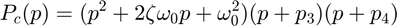. En specifiant le temps de réponse à 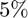 et l'amortissement 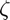 nous pouvons determiner 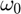 (voir le sujet) et ainsi calculer les deux pôles dominant du pendule en boucle fermée (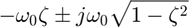). Les deux autres pôles doivent être choisis stables, très rapides par rapport aux pôles dominant et consistant par rapport aux capacitées des actionneurs et de la structure du pendule.
- On specifie le temps de réponse à : 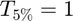 seconde et l'amortissement 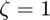
z=1 ; % amortissement zeta Tr=0.75 ; % Temps te réponse à 5% w0_Tr=4.5; % woTr=4 (voir figure 3 dans le sujet) w0=w0_Tr/Tr; % wo en boucle fermée p1=-z*w0; % 1er pôle dominant p2=-z*w0+0.001; % 2ème pôle dominant qui doit être different par rapport au premier afin que la commande place() focntionne p3=-6.1*z*w0; % 3ème pôle très rapide par rapport aux deux premiers p4=-6.2*z*w0; % 4ème pôle très rapide par rapport aux deux premiers Pc=[p1 p2 p3 p4]; Po=3*Pc; % Choix des pôles de l'observateur naturellement plus rapides que ceux du système en boucle fermée cas='discret_biais_ObS_4eme_ordre'; switch cas
Synthèse des lois de commande Observateur/Controlleur: Cas continu sans rejet de perturbations constantes
- Calculer les gains de retour d'état sous l'hypothèse que tous les états sont mesurables
- Calculer les gais de l'observateur suposant qu'on mesure uniquement les angles (theta et alpha) et utilisant le modèle dual 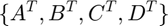
- Construire le schema block Simulink et effectuer les simulations considérant une consigne sur l'angle theta ou/et la presence d'une perturbation constante sur le signal de commande ou sur l'angle theta
- Donner les resultats de simulations les plus significatifs illustrant vos conclusions
- Realiser une sequence video des tests effectués sur maquette et publier cette sequence dans une adresse à envoyé avec votre rapport (sans la séquence vidéo).
- Conclure sur l'utilité et l'efficcité de cette algorithme de contrôle par rapport au specifications données
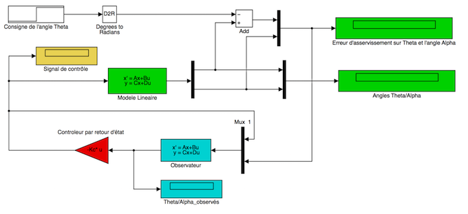
case 'continue'
X0=[0.3 0 0 0]';
X0_o=[0 0 0 0]';
Kc=place(A,B,Pc);
Ko=place(A',C',Po);
Ko=Ko';
Ao=A-Ko*C;
Bo=[B Ko];
Co=eye(4,4);
Do=zeros(4,3);
Synthèse des lois de commande Observateur/Controlleur: Cas discret sans rejet de perturbations constantes
- Calculer les gains de retour d'état sous l'hypothèse que tous les états sont mesurables
- Calculer les gais de l'observateur suposant qu'on mesure uniquement les angles (theta et alpha) et utilisant le modèle dual
- Construire le schema block Simulink et effectuer les simulations considérant une consigne sur l'angle theta ou/et la presence d'une perturbation constante sur le signal de commande ou sur l'angle theta
- Donner les resultats de simulations les plus significatifs illustrant vos conclusions
- Realiser une sequence video des tests effectués sur maquette et publier cette sequence dans une adresse à envoyé avec votre rapport (sans la séquence vidéo).
- Conclure sur l'utilité et l'efficcité de cette algorithme de contrôle par rapport au specifications données
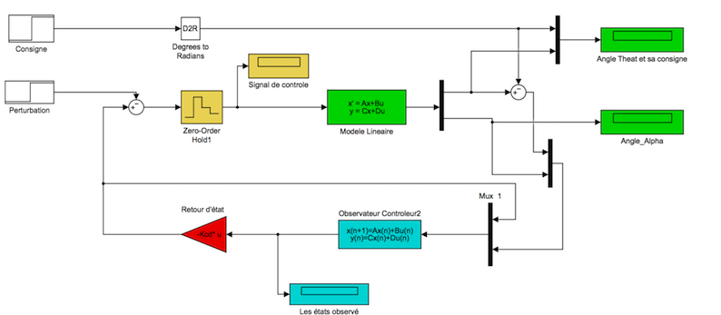
case 'discret'
T_ech=0.005;
X0=[0.3 0 0 0]';
X0_o=[0 0 0 0]';
[Ad,Bd]=c2d(A,B,T_ech)
Cd=C;Dd=D;
Pcd=exp(Pc*T_ech);
Pod=exp(Po*T_ech);
Kcd=place(Ad,Bd,Pcd);
Kod=place(Ad',Cd',Pod);
Kod=Kod';
Aod=Ad-Kod*Cd;
Bod=[Bd Kod];
Cod=eye(4,4);
Dod=zeros(4,3);
Synthèse des lois de commande Observateur/Controlleur: Cas continu avec rejet de perturbations constantes
- Calculer les gains de retour d'état sous l'hypothèse que tous les états sont mesurables y compris le cinquième état qui est l'integral de l'erreur entre l'angle theta et sa consigne
- Calculer les gais de l'observateur suposant qu'on mesure uniquement les angles (theta et alpha) et l'integral de l'erreur entre l'angle theta et sa consigne utilisant le modèle dual 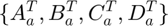
- Construire le schema block Simulink et effectuer les simulations considérant une consigne sur l'angle theta ou/et la presence d'une perturbation constante sur le signal de commande ou sur l'angle theta
- Donner les resultats de simulations les plus significatifs illustrant vos conclusions
- Realiser une sequence video des tests effectués sur maquette et publier cette sequence dans une adresse à envoyé avec votre rapport (sans la séquence vidéo).
- Conclure sur l'utilité et l'efficcité de cette algorithme de contrôle par rapport au specifications données
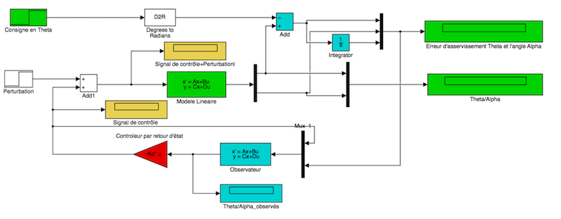
case 'continue_biais'
X0=[0.3 0 0 0]';
X0_o=[0 0 0 0 0]';
Aa=[A [0 0 0 0]'; [1 0 0 0 0]];
Ba=[B;0];
Ca=[C,[0 0]';0 0 0 0 1];
Da=zeros(3,1);
Pc=[Pc 0.8*Pc(1)];
Po=3*Pc;
Kc=place(Aa,Ba,Pc);
Ko=place(Aa',Ca',Po)
Ko=Ko';
Ao=Aa-Ko*Ca;
Bo=[Ba Ko];
Co=eye(5,5);
Do=zeros(5,4);
Synthèse des lois de commande Observateur/Controlleur: Cas discret avec rejet de perturbations constantes
- Calculer les gains de retour d'état sous l'hypothèse que tous les états sont mesurables y compris le cinquième état qui est l'integral de l'erreur entre l'angle theta et sa consigne
- Calculer les gais de l'observateur suposant qu'on mesure uniquement les angles (theta et alpha) et l'integral de l'erreur entre l'angle theta et sa consigne utilisant le modèle dual
- Construire le schema block Simulink et effectuer les simulations considérant une consigne sur l'angle theta ou/et la presence d'une perturbation constante sur le signal de commande ou sur l'angle theta
- Donner les resultats de simulations les plus significatifs illustrant vos conclusions
- Realiser une sequence video des tests effectués sur maquette et publier cette sequence dans une adresse à envoyé avec votre rapport (sans la séquence vidéo). % * Conclure sur l'utilité et l'efficcité de cette algorithme de contrôle par rapport au specifications données

case 'discret_biais' T_ech=0.005; X0=[0.3 0 0 0]'; X0_o=[0 0 0 0 0]'; Aa=[A [0 0 0 0]'; [1 0 0 0 0]]; Ba=[B;0]; Ca=[C,[0 0]';0 0 0 0 1]; Da=zeros(3,1); [Ad,Bd]=c2d(Aa,Ba,T_ech); Cd=Ca;Dd=Da; Pc=[Pc 0.1*Pc(1)]; Po=3*Pc; Pcd=exp(Pc*T_ech); Pod=exp(Po*T_ech); Kcd=place(Ad,Bd,Pcd); Kod=place(Ad',Cd',Pod); Kod=Kod'; Aod=Ad-Kod*Cd; Bod=[Bd Kod]; Cod=eye(5,5); Dod=zeros(5,4); case 'discret_biais_ObS_4eme_ordre'
T_ech=0.01;
X0=[0.3 0 0 0]';
X0_o=[0 0 0 0]';
Aa=[A [0 0 0 0]'; [1 0 0 0 0]];
Ba=[B;0];
[Ad,Bd]=c2d(A,B,T_ech);
Cd=C;Dd=D;
[Adb,Bdb]=c2d(Aa,Ba,T_ech);
Pcb=[Pc 0.2*Pc(1)];
Po=3*Pc;
Pcd=exp(Pcb*T_ech);
Pod=exp(Po*T_ech);
Kcd=place(Adb,Bdb,Pcd);
Kod=place(Ad',Cd',Pod);
Kod=Kod';
Aod=Ad-Kod*Cd;
Bod=[Bd Kod];
Cod=eye(4,4);
Dod=zeros(4,3);
end
%Observateur_Controleur_Dspace